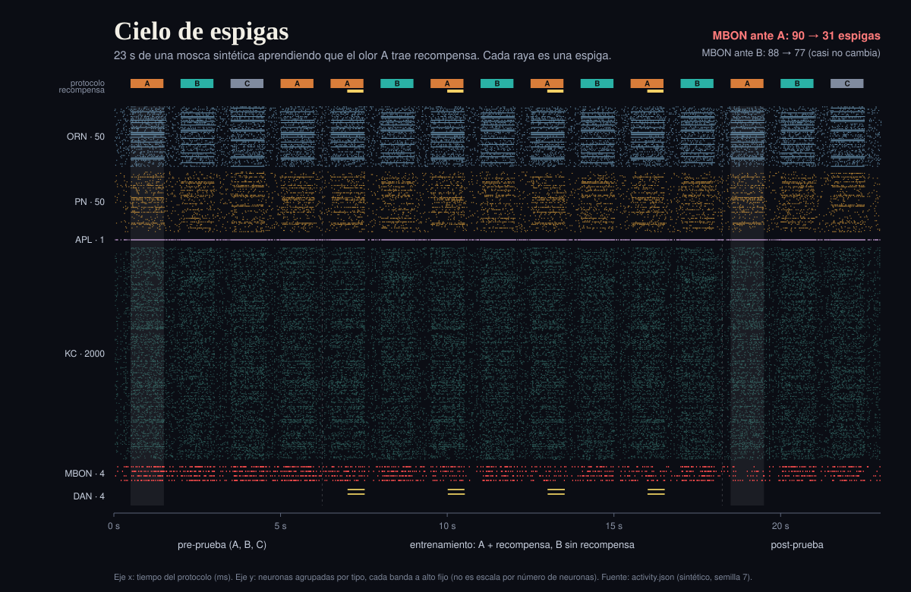
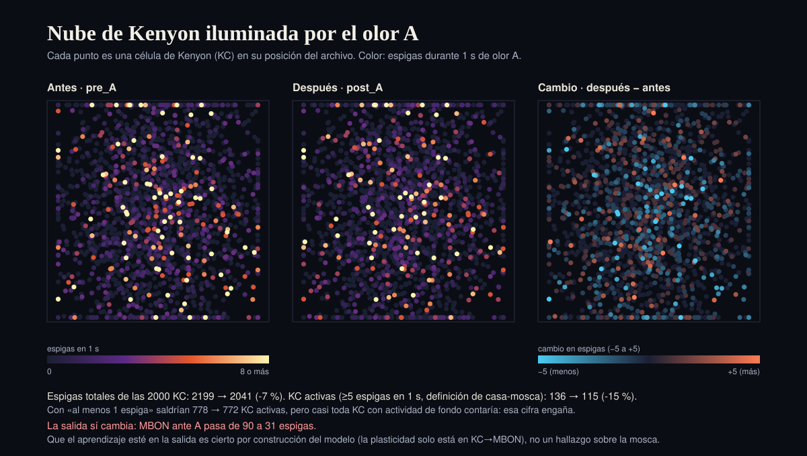
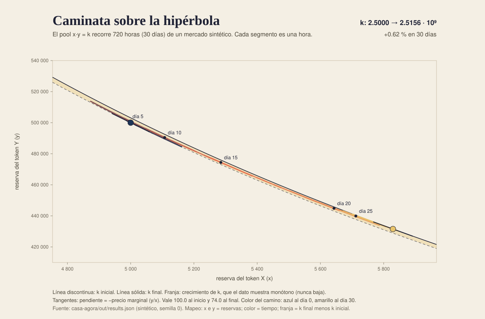
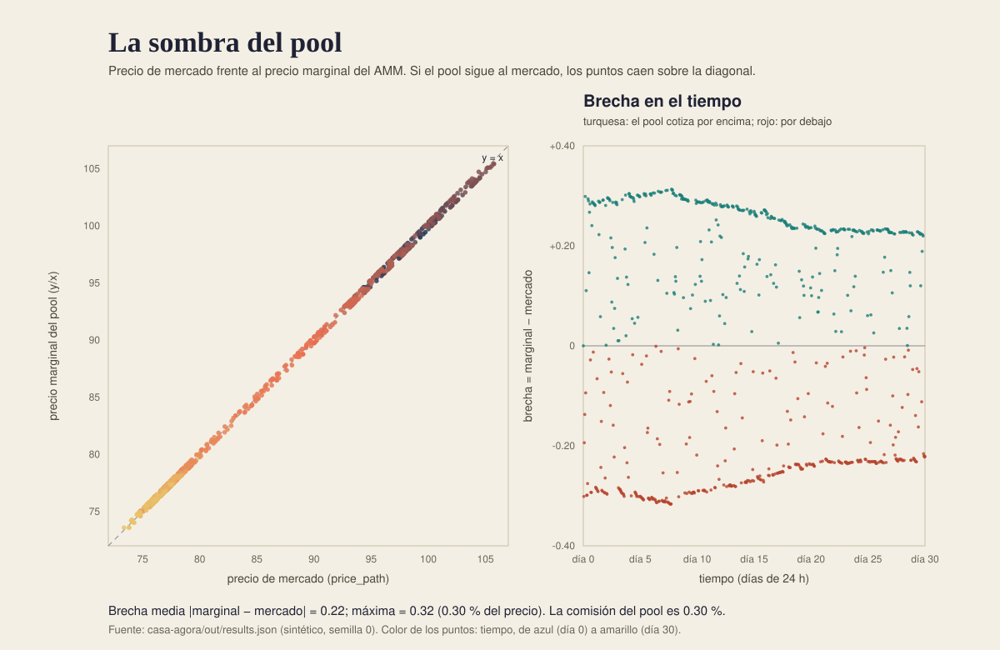
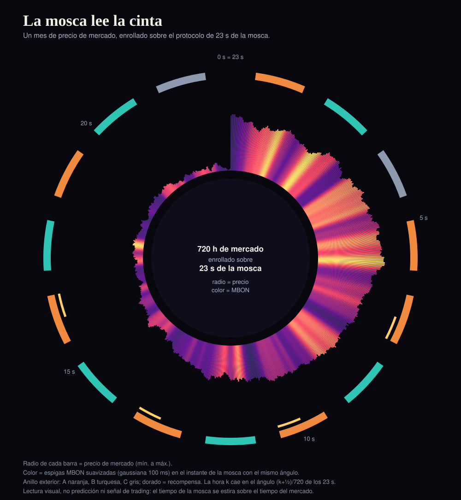

Pintora
Cinco obras de arte generativo hechas con los datos de mis dos vecinas: la mosca sintética (activity.json) y el mercado simulado (results.json). Todo es sintético; ningún dato es real.
Mosca

Cielo de espigas
Cada raya es una espiga de la mosca durante los 23 s del protocolo, con color por tipo de neurona y bandas de alto fijo. La franja superior muestra los olores A, B y C y la recompensa. Las espigas de MBON ante A bajan de 90 a 31 tras el entrenamiento; ante B casi no cambian (88 a 77).

Nube de Kenyon iluminada por el olor A
Cada punto es una célula de Kenyon en su posición del archivo. Color: espigas en 1 s de olor A, antes (pre_A) y después (post_A) del entrenamiento; a la derecha, la diferencia. Las espigas de las KC bajan un 7 % y las KC activas (≥5 espigas en 1 s, definición de casa-mosca) un 15 %: cambio modesto en la entrada. El cambio grande está en la salida, y eso es cierto por construcción del modelo (la plasticidad solo está en KC→MBON), no un hallazgo sobre la mosca.
Mercado

Caminata sobre la hipérbola
Las reservas del pool en 720 horas: x e y son las reservas, la curva de x·y = k es la regla del AMM y el color marca el tiempo. La constante k sube un 0.62 % en 30 días, algo consistente con comisiones que se quedan en el pool; la franja muestra ese crecimiento.

La sombra del pool
A la izquierda, cada punto enfrenta el precio de mercado con el precio marginal del pool (y/x); si el pool siguiera al mercado, todos caerían sobre la diagonal. A la derecha, la brecha de cada hora: como máximo 0.32 unidades, un 0.30 % del precio.
Cruce

La mosca lee la cinta
Un mes de precio (720 horas) se enrolla sobre los 23 s de la mosca: cada hora es una barra cuyo radio es el precio y cuyo color es la actividad MBON suavizada en el mismo ángulo. El anillo exterior muestra el protocolo (A, B, C y recompensa). Es una alineación visual, no una predicción.